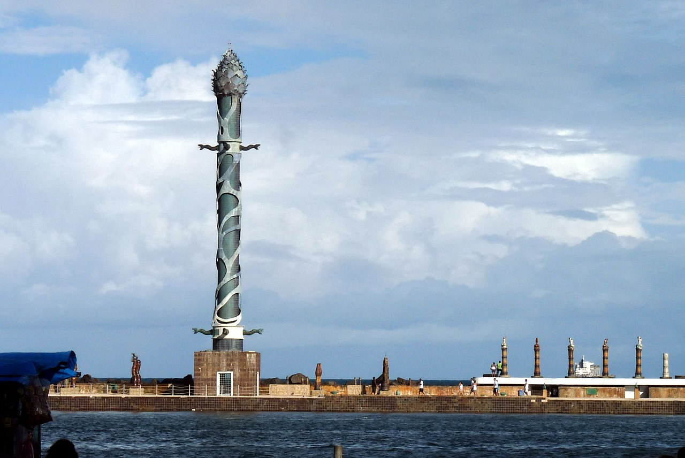

Parque das Esculturas
Galeria permanente sobre os arrecifes chama atenção no Parque das Esculturas Francisco Brennand
Peças em cerâmica mostram o contexto criativo do artista Francisco Brennand
Não vale chegar ao Recife sem dedicar um tempo para as obras do artista plástico Francisco Brennand (1927-2019), expostas no Parque das Esculturas. Do Marco Zero, no coração do Centro Histórico, é possível ver uma galeria permanente montada no ano de 2000 sobre os arrecifes naturais que protegem o porto.
Destaque para a Coluna de Cristal, com mais de 30 metros de altura feita em concreto, cerâmica e elementos esculturais de bronze. Estonteante, a peça divide espaço com outros objetos fantásticos em forma de ovos e aves, por exemplo.
ACESSO
Para chegar ao parque, pode-se ir de carro, utilizando o acesso pela orla da Av. Brasília Teimosa, na Zona Sul do Recife. Também há pequenas embarcações, saindo do Marco Zero, indo até o pórtico de cerâmica - entrada do parque pelo rio, que acontece diariamente, das 7h às 17h.